contributor: 조남경님
- OpenAI API를 사용해 대량의 이미지를 생산했습니다.
- 그러나 너무나 많은 이미지를 찍어낸 나머지 기법 이름과 매치해서 보기가 어렵습니다.
- python-pptx를 이용해 효과적으로 정리합니다. DeepL의 자동 번역도 빌립니다.
- 이번 글은 코드 비중이 큽니다. 보시기 어려울 것 같아 최종결과 다운로드 링크를 먼저 드립니다.
- 분량이 많아 통판과 함께 4개로 나눈 버전을 함께 올립니다.
DALL.E3 스타일 가이드북 part I 다운로드
DALL.E3 스타일 가이드북 part II 다운로드
DALL.E3 스타일 가이드북 part III 다운로드
DALL.E3 스타일 가이드북 part IV 다운로드
- 활용시 출처를 명기해주시기 바랍니다.
- 무단 도용을 막기 위한 워터마크가 삽입되어 있습니다.
- 워터마크가 없는 버전을 원하시는 분께서는 개별 연락바랍니다. (jehyun.lee@gmail.com)
4. OpenAI API: 추가 Image Generation
4.1. 빠진 스타일 추가
- 지난 글에서 챗달이(ChatGPT + DALL.E)가 제공하는 다양한 스타일을 확인했습니다.
- 이 다양한 스타일을 최대한 자동으로 정리하고자 ChatGPT의 도움을 받았지만,
- 막상 챗달이에서 그림을 그려보려면 여전히 없는 스타일들이 있습니다.
mute tone,sepia같은 그림의 톤은 이번 탐구의 대상이 아니니 넘어간다 치더라도,- 중요 스타일들은 빠진 것이 너무 불편해서 손으로 챗달이 화면을 넘기며 이름을 추가했습니다.
comic book,folk art,silk screen,acrylic,charcoal,hand-drawn,pencil sketch,cave art,linocut,carravaggism,cartoon,pastel,retro,ink wask,ink painting,woodcut,alcohol ink,claymation,sci-fi,felt,crayon,mosaic가 그 대상입니다.- 결과적으로 총 382종의 스타일을 확보했고, ChatGPT의 힘을 빌려 description과 그림을 얻었습니다.
4.2. 샘플 그림 추가
- 커피를 소재로 여러 스타일을 적용했으나 답답함이 느껴졌습니다.
- 커피잔은 정적인 대상이기 때문에 스타일 반영에 제약이 있을 것이라 생각해서 다른 대상을 여럿 추가했습니다.
- 사물인 커피잔에 동물, 식물, 소년, 소녀, 건축물, 풍경을 추가합니다.
- 대상이 스타일에 따라 구도가 바뀔 수도 있을 것 같아 프롬프트는 최소한으로 입력했습니다.
{object}, in style of {style}, square aspect ratio.
- 여러 명화에서 소재를 가져와 추가했습니다.
- 실제 그림과 그림 제목을 프롬프트로 사용했을 때 얼마나 유사한지 비교해보고 싶기도 했습니다.
a cup of coffee,a cute cat: 조남경著, 미드저니 프롬프트 가이드boy with a basket of fruit: 카라바조 (1593), Caravaggismeiffel tower: 조르주 쇠라 (1889), pointillismsunflowers: 반 고흐 (1888), Post Impressionismwater-lily pond: 클로드 모네 (1919), ImpressionismYoung Girls at the Piano: 오귀스트 르누아르 (1892) Impressionism
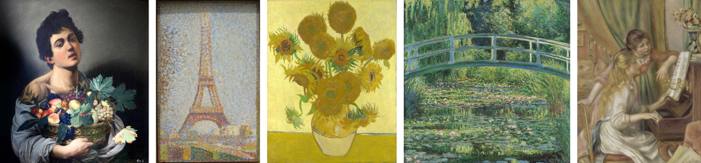
- 일부 샘플 결과를 비교해 보니 소재를 추가한 보람이 있습니다.
- 여러 소재에서 스타일의 특색이 잘 느껴집니다.
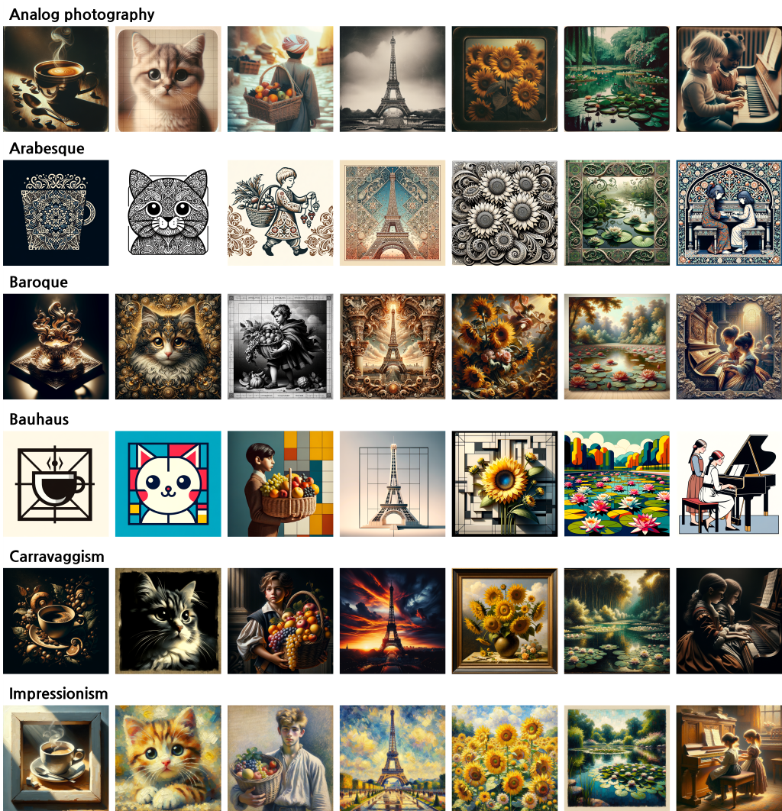
- 그런데 생각보다 달리의 자유도가 많이 반영된 것 같습니다.
- 짧은 프롬프트가 입력되면 비어 있는 공간을 달리의 상상력으로 채우기 때문입니다.
- 챗달이가 만든 revised prompt를 저장해 두었으니 어떻게 상상했는지 알아볼 수 있습니다.
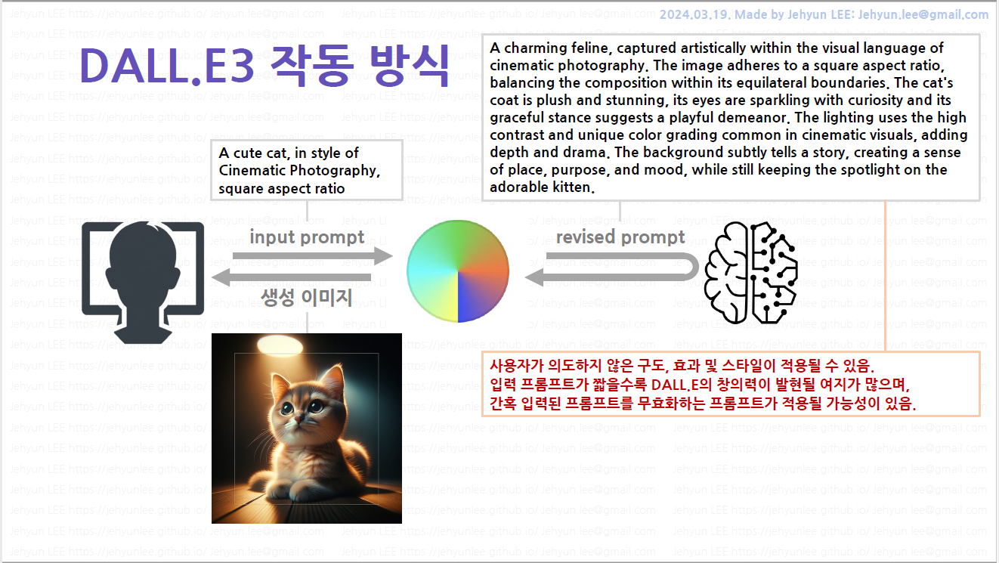
- 이렇게 382종 x 7가지 대상 = 2,674장의 그림이 마련되었습니다.
- 그림 하나에 1초씩만 쓰며 넘겨도 45분이 걸리는 분량입니다.
- 한번에 보고 머리에 넣기는 도저히 무리입니다.
- 두고 종종 볼 수 있도록 예쁘게 정리합시다.
5. 자료 정리
5.1. Microsoft Powerpoint
- 함께 담을 정보가 제법 많습니다.
- 항목만 꼽아도 스타일 이름, 스타일 설명, 그림 7장이 있고, 제법 긴 revised prompt도 참고차 함께 정리해야 합니다.
- 스타일 설명은 한국어로 번역도 해야 할 것 같습니다.
- 고민 끝에 파워포인트에서 스타일별로 다음과 같은 페이지를 구성하기로 했습니다.
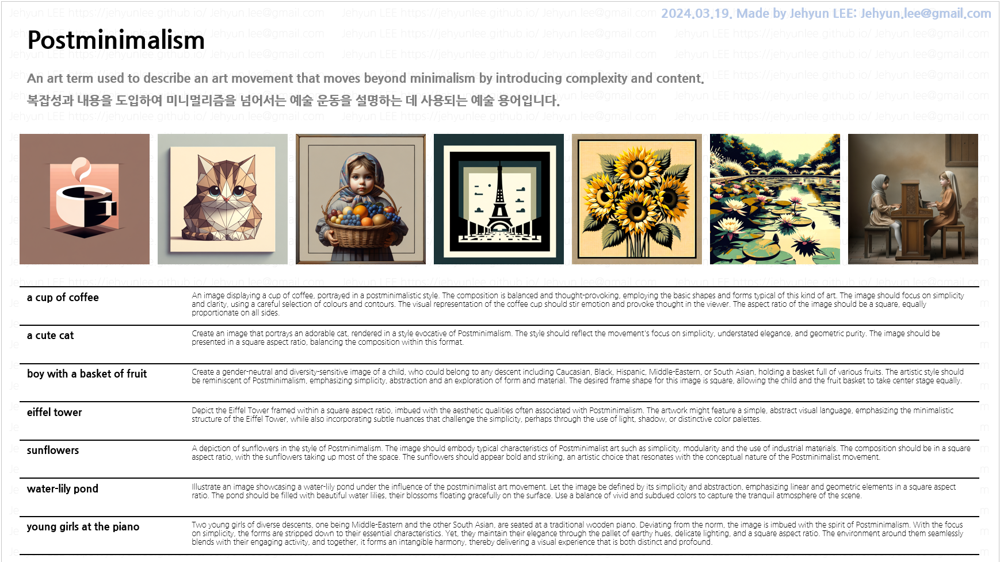
- 마우스를 클릭하고 드래그하며 한 장을 어찌어찌 만들기는 했는데 시간이 제법 많이 갔습니다.
- 382장을 만들려니 아득합니다.
- 하지만 우리에게는 파이썬과 python-pptx 라이브러리가 있습니다.
- 자동화를 해버립니다.
5.2. DeepL API
- 먼저, 가독성을 높이기 위해 스타일 설명을 한글로 실어야 합니다.
- 영문으로 되어 있는 description을 번역합니다.
- 다행히 제법 좋은 번역기, DeepL API의 힘을 빌릴 수 있습니다.
- DeepL API 문서를 따라 예제를 만들어 실행합니다.
- 다음과 같이 영어가 불어로 번역됩니다. 속도도 제법 빠릅니다.
1
2
3
4
5
6
7import deepl
translator = deepl.Translator(DeepL_API_KEY)
result = translator.translate_text("Hello, world!", target_lang="FR")
print(result.detected_source_lang)
print(result.text)- 실행 결과
1
2EN # 입력 언어 감지: 영어
Bonjour à tous !
- 실행 결과
- 모아둔 style description에 위 코드를 적용합니다.
pandas Series에apply()를 적용하면 다음과 같이 깔끔한 번역을 얻을 수 있습니다.
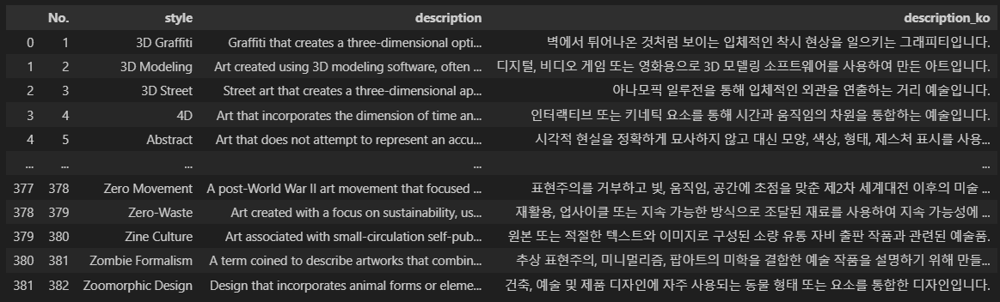
- 이제 파워포인트 슬라이드 작성을 자동화할 차례입니다.
5.3. 데이터 정리
- 먼저, 데이터를 깔끔하게 정리합시다.
pandas DataFrame을 사용해 input prompt에서 object와 style을 분리해둡니다.- 생성한 그림들이 object별 개별 폴더에 들어있고, 파일명에 style이 포함되어 있기 때문에 이미지 확보에 필요합니다.
- 또, 이렇게 분리한 object와 style은 revised prompt를 불러내는 key가 됩니다.
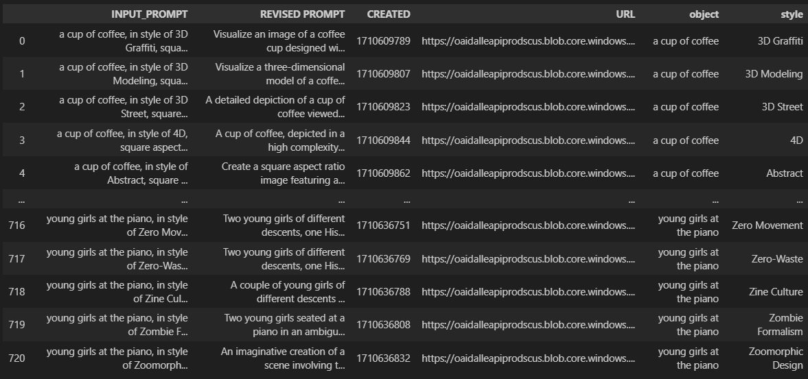
- 데이터 정리는 이 블로그의 다른 글에서 많이 했고, 어렵지 않으므로 생략합니다.
- 파워포인트 슬라이드 제작에 집중하겠습니다.
5.4. 파워포인트 슬라이드 제작
5.4.1. 새 슬라이드 만들기
python-pptx는 파워포인트에서 마우스로 클릭하고 키보드를 입력하여 진행하는 모든 일을 코드로 수행합니다.
예를 들면 파워포인트에서 도형을 집어 옮기는 일은 간단하면서 두리뭉술하지만,
먼저, 새 프레젠테이션 파일과 슬라이드를 만드는 것으로 시작합니다.
1
2
3
4
5
6
7
8
9
10
11
12
13
14from pptx import Presentation
from pptx.util import Cm
# 새 파일 만들기
presentation = Presentation() # 새 프레젠테이션 만들기
presentation.slide_width = Cm(33.867) # 기본 16:9 디자인
presentation.slide_height = Cm(19.05)
# Add an empty slide
slide_layout = presentation.slide_layouts[6]
slide = presentation.slides.add_slide(slide_layout) # 새 슬라이드 만들기
# 파일 저장
presentation.save(f"./doc/example.pptx")위 코드를 실행하면 새 프레젠테이션이 만들어집니다.
python-ppt에서는 도형이 놓일 지점의 좌표를 입력해야 합니다. 단위는 cm로 지정했습니다.
공식 예제에서는 Inch를 사용하지만 우리는 cm를 주로 쓰기 때문입니다.
손으로 만든 파워포인트 슬라이드에서 위치를 읽어 참조하기에 cm가 좋습니다.
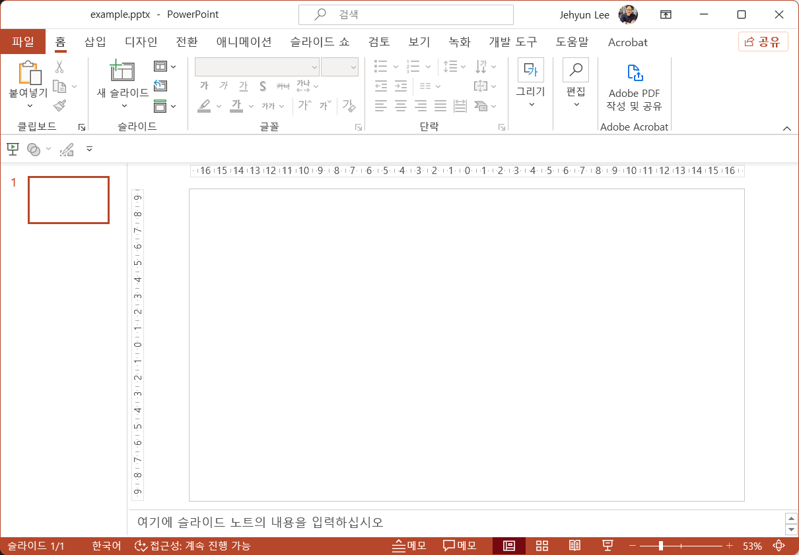
- 이제 새 슬라이드에 텍스트 상자를 얹어 글을 쓰고 폰트와 색을 고를 차례입니다.
5.4.2. 텍스트 상자 만들기
- 앞서 손으로 만든 슬라이드에서 대부분의 객체가 텍스트 상자입니다.
- 텍스트 상자는 위치(가로, 세로), 크기(가로, 세로), 글꼴, 글꼴 크기, 글꼴 색 등 다양한 속성이 필요합니다.
- 텍스트 상자를 만들때마다 이 모든 속성을 지정해가며 만들기보다는 함수를 만드는 것이 합리적입니다.
색을 처리하는 함수를 먼저 만듭니다.
모든 도형에 색을 지정하는 과정이 수반되기 때문에 이 역시 함수를 만드는 것이 좋습니다.
입력 형식(
list,tuple,string)이 무엇이건 0~255 사이의 정수를 반환하는 함수를 만듭니다.1
2
3
4
5
6
7
8
9
10
11
12# 입력 색 처리 (list, tuple, string)
def get_color(color):
if isinstance(color, list) or isinstance(color, tuple):
R, G, B = color[0], color[1], color[2]
elif isinstance(color, str) and not color.startswith("#") and len(color) == 6:
R, G, B = int(color[0:2], 16), int(color[2:4], 16), int(color[4:], 16)
elif isinstance(color, str) and color.startswith("#") and len(color) == 7:
R, G, B = int(color[1:3], 16), int(color[3:5], 16), int(color[5:], 16)
else:
R, G, B = None, None, None
return R, G, B텍스트 상자 입력 함수를 만듭니다.
글꼴 이름은 파워포인트에서 보이는 이름 그대로 사용할 수 있어 편리합니다.
1
2
3
4
5
6
7
8
9
10
11
12
13
14
15
16
17
18
19
20
21
22
23
24
25
26
27
28
29
30
31
32
33from pptx.util import Pt
from pptx.enum.text import PP_ALIGN, MSO_ANCHOR
# Textbox 삽입 함수
def add_textbox(slide, left, top, width, height, text="sample", ha="left", va="top", fontname="나눔고딕", fontsize=12, fontcolor=(0, 0, 0)):
# font color 변환
R, G, B = get_color(fontcolor)
# text box position and size
text_box = slide.shapes.add_textbox(Cm(left), Cm(top), Cm(width), Cm(height))
# text and its properties
text_frame = text_box.text_frame
text_frame.text = text
text_frame.paragraphs[0].font.name = fontname
text_frame.paragraphs[0].font.size = Pt(fontsize)
text_frame.paragraphs[0].font.color.rgb = RGBColor(R, G, B)
# horizontal alignment
text_frame.paragraphs[0].alignment = PP_ALIGN.LEFT
if ha == "right":
text_frame.paragraphs[0].alignment = PP_ALIGN.RIGHT
elif ha == "center":
text_frame.paragraphs[0].alignment = PP_ALIGN.CENTER
# vertical alignment
text_frame.vertical_anchor = MSO_ANCHOR.TOP
if va == "middle":
text_frame.vertical_anchor = MSO_ANCHOR.MIDDLE
elif va == "bottom":
text_frame.vertical_anchor = MSO_ANCHOR.BOTTOM
return text_box이 함수를 사용해 슬라이드에 텍스트를 추가합니다. 예제 style은 3D Graffiti로 설정했습니다.
우측 상단에 저작권 관련 문구를 하늘색으로 입력하고,
좌측 상단에 style 이름을 나눔고딕 ExtraBold를 사용해 입력합니다.
그 아래 style 설명을 영문과 국문으로 회색의 조금 작은 글씨로 입력합니다.
1
2
3
4
5
6
7
8
9
10
11
12
13
14
15
16style = "3D Graffiti"
# Textbox: Author name
text_stylename = add_textbox(slide, 18.87, 0, 15, 0.77, "2024.03.19. Made by Jehyun LEE: Jehyun.lee@gmail.com", ha="right",
fontname="나눔고딕 ExtraBold", fontsize=12, fontcolor="#B4C7E7")
# Textbox: Style name
text_stylename = add_textbox(slide, 0.6, 0.62, 33, 1.28, style, fontname="나눔고딕 ExtraBold", fontsize=24, fontcolor=(0, 0, 0))
# Textbox: Style description (en/ko)
description = df_styles_merged.loc[df_styles_merged["style"] == style, "description"].values[0]
description_ko = df_styles_merged.loc[df_styles_merged["style"] == style, "description_ko"].values[0]
text_desc_en = add_textbox(slide, 0.6, 2.2, 33, 0.77, description, fontname="나눔고딕 ExtraBold", fontsize=12, fontcolor=(127, 127, 127))
text_desc_ko = add_textbox(slide, 0.6, 2.96, 33, 0.77, description_ko, fontname="나눔고딕 ExtraBold", fontsize=12, fontcolor=(127, 127, 127))
# 파일 저장
presentation.save(f"./doc/example.pptx")
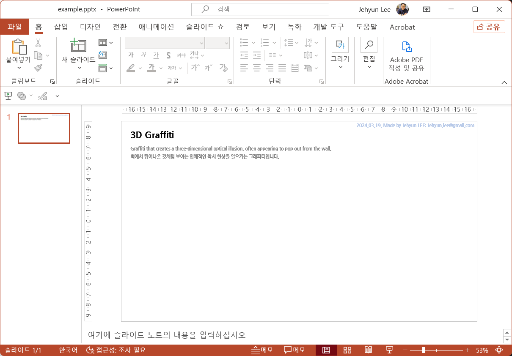
5.4.3. 표 만들기
object 이름과 revised prompt가 담긴 표를 만들 차례입니다.
표는 여러 개의 텍스트 상자가 붙어있다고 볼 수 있으며, row와 column 수, row height와 column width 등 훨씬 많은 속성을 필요로 합니다.
색이 여러 곳에 들어가야 하기 때문에 여기서는 background colors와 font colors를 hex code로만 받도록 했습니다.
그래도 복잡해져서 column별로 속성을 통일하도록 했는데, 실제 시행 착오를 겪으며 구현에 적지 않은 시간이 걸렸습니다.
1
2
3
4
5
6
7
8
9
10
11
12
13
14
15
16
17
18
19
20
21
22
23
24
25
26
27
28
29
30
31
32
33
34
35
36
37
38
39
40
41
42
43
44
45
46
47
48
49
50
51
52
53
54
55
56
57
58
59
60
61
62
63
64
65
66
67
68
69
70from pptx.dml.color import RGBColor
# Table 삽입 함수
def add_table(slide, left, top, width, height, nrow=2, ncol=2, row_heights=1, col_widths=1, bgcolors="#FFFFFF",
texts=None, fontnames="나눔고딕", fontsizes=12, fontcolors="#000000"):
"""
bgcolors : cell background color. should be hex code or list of hex code.
If not specified, "none" is used and no background color is set.
"""
# table position and size
table = slide.shapes.add_table(nrow, ncol, Cm(left), Cm(top), Cm(width), Cm(height))
table.style = "Table Grid"
# set row height
if isinstance(row_heights, int) or isinstance(row_heights, float):
for row in table.table.rows:
row.height = Cm(row_heights)
elif isinstance(row_heights, list) or isinstance(row_heights, tuple):
if len(row_heights) != nrow:
print("'row_heights' should be a scalar or vector with same length with 'rows'")
exit()
for row, row_height in zip(table.table.rows, row_heights):
row.height = Cm(row_height)
# set column widths
if isinstance(col_widths, int) or isinstance(col_widths, float):
for col in table.table.columns:
col.width = Cm(col_widths)
elif isinstance(col_widths, list) or isinstance(col_widths, tuple):
if len(col_widths) != ncol:
print("'col_widths' should be a scalar or vector with same length with 'cols'")
exit()
for col, col_width in zip(table.table.columns, col_widths):
col.width = Cm(col_width)
# background colors and font colors are set by columns
if not isinstance(texts, np.ndarray) and texts == None:
texts = np.zeros((nrow, ncol))
if isinstance(bgcolors, list) or isinstance(bgcolors, tuple):
bgcolors_list = [(R, G, B) for R, G, B in map(get_color, bgcolors)]
else:
bgcolors_list = [get_color(bgcolors)] * ncol
if isinstance(fontcolors, list) or isinstance(fontcolors, tuple):
fontcolors_list = [(R, G, B) for R, G, B in map(get_color, fontcolors)]
else:
fontcolors_list = [get_color(fontcolors)] * ncol
if isinstance(fontnames, list) or isinstance(fontnames, tuple):
fontnames_list = fontnames
else:
fontnames_list = [fontnames] * ncol
if isinstance(fontsizes, list) or isinstance(fontsizes, tuple):
fontsizes_list = fontsizes
else:
fontsizes_list = [fontsizes] * ncol
for col, bgcolor, fontname, fontsize, fontcolor in zip(range(ncol), bgcolors_list, fontnames_list, fontsizes_list, fontcolors_list):
for row in range(nrow):
table.table.cell(row, col).fill.solid()
table.table.cell(row, col).fill.fore_color.rgb = RGBColor(*bgcolor)
table.table.cell(row, col).text = str(texts[row, col])
table.table.cell(row, col).text_frame.paragraphs[0].font.name = fontname
table.table.cell(row, col).text_frame.paragraphs[0].font.size = Pt(fontsize)
table.table.cell(row, col).text_frame.paragraphs[0].font.color.rgb = RGBColor(*fontcolor)
table.table.cell(row, col).text_frame.paragraphs[0].font.bold = False
return table앞에서 만든 슬라이드에 표를 삽입합니다.
표에 들어갈 내용은 앞에서 정리한 데이터프레임에서 가져옵니다.
1
2
3
4
5
6
7
8# Table: styles and revised prompts
texts = df_dalle3.loc[df_dalle3['style'] == style, ["object", "REVISED PROMPT"]].values
table_reprompts = add_table(slide, 0.6, 9.7, 32.6, 9.1, nrow=7, ncol=2, row_heights=1.3, col_widths=[5.6, 27], bgcolors="#FFFFFF",
texts=texts, fontnames=["나눔고딕 ExtraBold", "나눔고딕 Light"], fontsizes=[10, 7])
# 파일 저장
presentation.save(f"./doc/example.pptx")
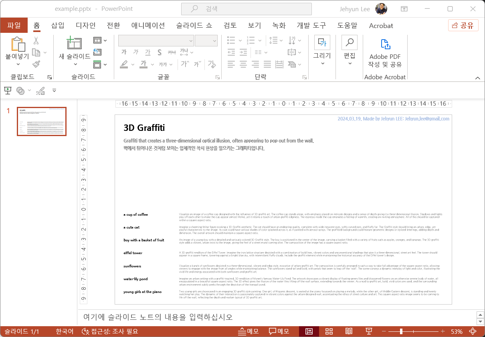
5.4.4. 선 그리기
python-pptx에 큰 단점이 있습니다.
표 경계선(border) 속성 제어가 안된다는 점입니다.
번거롭지만 추가로 선을 그려서 object별 revised prompt를 구분합니다.
1
2
3
4
5
6
7
8
9
10
11
12
13# Line 삽입 함수
def add_line(slide, left, top, width, height, linewidth=1, linecolor="#000000"):
# line color 변환
R, G, B = get_color(linecolor)
# line position and size
line = slide.shapes.add_shape(MSO_SHAPE.LINE_INVERSE, Cm(left), Cm(top), Cm(width), Cm(height))
line.line.width = Pt(linewidth)
line.line.color.rgb = RGBColor(R, G, B)
line.line.fill.solid()
line.shadow.inherit = False
return linerow 수보다 하나 더 많은 선을 추가합니다.
1
2
3
4
5
6# Line: horizontal lines between rows
for i in range(8):
add_line(slide, 0.6, 9.7 + 1.3 * i, 32.6, 0, linewidth=1, linecolor="#000000")
# 파일 저장
presentation.save(f"./doc/example.pptx")
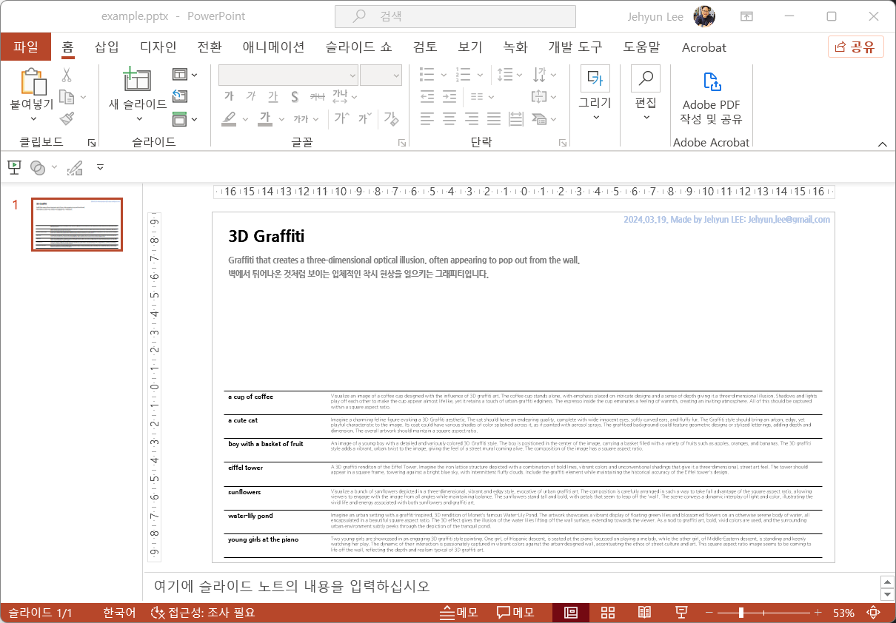
5.4.5. 이미지 삽입
마지막으로 이미지를 삽입합니다.
DALL.E에서 만든 이미지들을 각각의 폴더에 모아두었기에 폴더와 파일명을 정확히 지정해서 불러옵니다.
이미지 삽입 명령은 다른 것보다 단순합니다.
1
2
3# Image 삽입 함수
def add_image(slide, left, top, width, height, img_path):
slide.shapes.add_picture(img_path, Cm(left), Cm(top), Cm(width), Cm(height))같은 방식으로, 이어서 슬라이드에 그림을 붙입니다.
object_us는 object별로 폴더 이름과 파일명 시작을 정해둔 규칙입니다.1
2
3
4
5
6
7# Image: DALL.E3 generated image
for i, object in enumerate(objects_us):
img_path = f"./{object}/{object}_{style.replace(' ', '_')}.png"
add_image(slide, 0.6+4.69*i, 4.5, 4.42, 4.42, img_path)
# 파일 저장
presentation.save(f"./doc/example.pptx")약 3초의 시간이 지나고 동작이 완료됩니다.
파일을 열어 보면 손으로 한 땀 한 땀 만들었던 슬라이드와 구성이 동일합니다.
손으로 만든 슬라이드에서 구성 요소들의 위치와 크기를 충실히 반영한 덕분입니다.
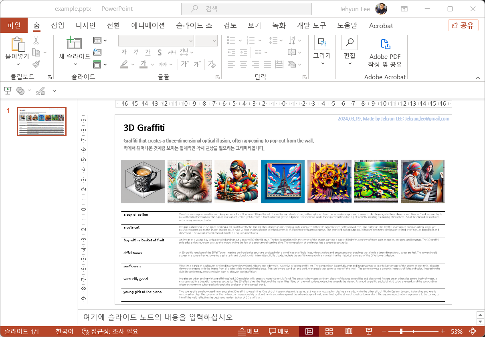
5.4.5. 자동화
- 위 함수들을 사용해 파워포인트 슬라이드 위에 도안대로 객체들을 늘어놓습니다.
- 슬라이드 한 장에 그림이 7장씩 들어가다 보니, 20장만 그려도 용량이 200메가가 넘습니다.
- 우선 개별 파일로 저장하여 PDF 변환 후 합치는 전략을 선택합니다.
1
2
3
4
5
6
7
8
9
10
11
12
13
14
15
16
17
18
19
20
21
22
23
24
25
26
27
28
29
30
31
32
33
34
35
36
37
38
39
40
41
42
43
44
45
46
47
48
49
50
51
52
53# 20개씩 슬라이드 생성
start, end = 0, 384
for start in range(0, 384, 20):
end = min(start + 20, 384)
# Create a new PowerPoint presentation (powerpoint default 16:9 design)
presentation = Presentation()
presentation.slide_width = Cm(33.867)
presentation.slide_height = Cm(19.05)
# slide layout
slide_layout = presentation.slide_layouts[6]
for i, style in enumerate(styles_u[start:end]):
print(style)
try:
# Add an empty slide
slide = presentation.slides.add_slide(slide_layout)
# Textbox: Author name
text_stylename = add_textbox(slide, 18.87, 0, 15, 0.77, "2024.03.19. Made by Jehyun LEE: Jehyun.lee@gmail.com", ha="right",
fontname="나눔고딕 ExtraBold", fontsize=12, fontcolor="#B4C7E7")
# Textbox: Style name
text_stylename = add_textbox(slide, 0.6, 0.62, 33, 1.28, style, fontname="나눔고딕 ExtraBold", fontsize=24, fontcolor=(0, 0, 0))
# Textbox: Style description (en/ko)
description = df_styles_merged.loc[df_styles_merged["style"] == style, "description"].values[0]
description_ko = df_styles_merged.loc[df_styles_merged["style"] == style, "description_ko"].values[0]
text_desc_en = add_textbox(slide, 0.6, 2.2, 33, 0.77, description, fontname="나눔고딕 ExtraBold", fontsize=12, fontcolor=(127, 127, 127))
text_desc_ko = add_textbox(slide, 0.6, 2.96, 33, 0.77, description_ko, fontname="나눔고딕 ExtraBold", fontsize=12, fontcolor=(127, 127, 127))
# Table: styles and revised prompts
texts = df_dalle3.loc[df_dalle3['style'] == style, ["object", "REVISED PROMPT"]].values
table_reprompts = add_table(slide, 0.6, 9.7, 32.6, 9.1, nrow=7, ncol=2, row_heights=1.3, col_widths=[5.6, 27], bgcolors="#FFFFFF",
texts=texts, fontnames=["나눔고딕 ExtraBold", "나눔고딕 Light"], fontsizes=[10, 7])
# Line: horizontal lines between rows
for i in range(8):
add_line(slide, 0.6, 9.7 + 1.3 * i, 32.6, 0, linewidth=1, linecolor="#000000")
# Image: DALL.E3 generated image
for i, object in enumerate(objects_us):
img_path = f"./{object}/{object}_{style.replace(' ', '_')}.png"
add_image(slide, 0.6+4.69*i, 4.5, 4.42, 4.42, img_path)
except:
pass
# Export
presentation.save(f"./document/dalle3_382styles_{start}.pptx")
6. 마무리
- 마지막으로, 워터마크를 박아넣고 PDF로 변환한 뒤 취합하면 다음과 같은 자료가 됩니다.
- 처음 구상보다 스케일이 많이 커졌습니다.
- 본의 아니게 2700장이 넘는 데이터를 생성한 셈이 되었는데, 이 것으로 무엇을 할지 고민을 해봐야겠습니다. :)
- 다채로운 상상력을 발휘하시는 데 도움이 되기를 바랍니다.
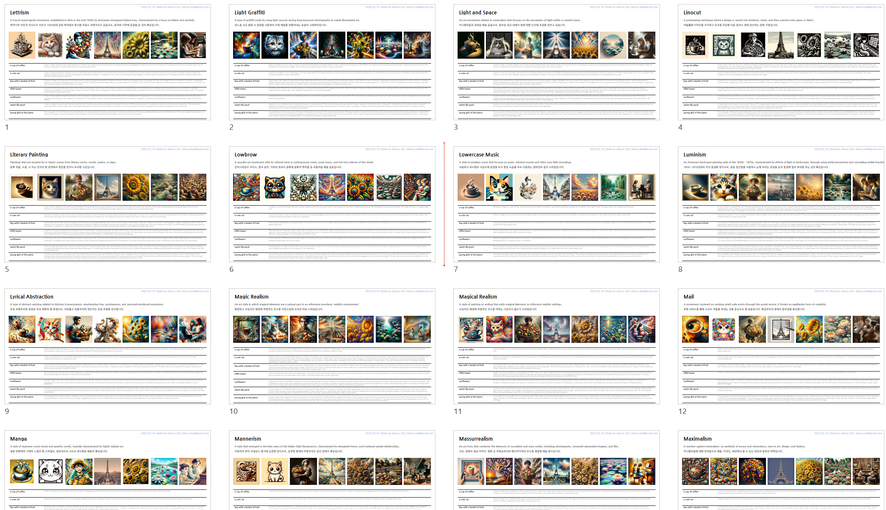
DALL.E3 스타일 가이드북 part I 다운로드
DALL.E3 스타일 가이드북 part II 다운로드
DALL.E3 스타일 가이드북 part III 다운로드
DALL.E3 스타일 가이드북 part IV 다운로드